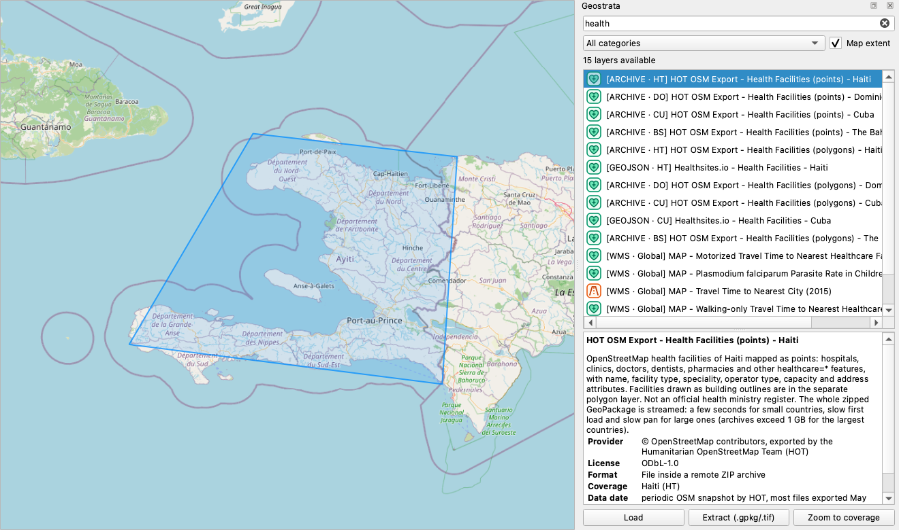

Find open geodata for the map in front of you
Geostrata is a QGIS plugin. Type a keyword in the locator bar and it lists the open layers that cover your current map view, out of a catalog of 267. Press Enter to load one.
Free and open source (GPL). QGIS 3.28+ and 4.x on Windows, macOS and Linux. No account, no server, no extra Python package.
| You type or press | What happens |
|---|---|
gst water |
Lists the layers matching "water" that cover the visible map, local ones first. |
gst water !global |
Searches the whole catalog, wherever your map is. |
| Enter | Adds the layer to the project as a live stream, already styled and attributed. |
| Shift+Enter | Saves a copy clipped to the visible map as a local .gpkg or .tif, usable offline. |
How to use
-
Zoom to your area of interest
Geostrata only suggests layers that have data where you are looking. A map centred on Lyon gets the city's open data, the French national layers, then the worldwide ones.
-
Search with the
gstprefixOpen the locator bar and type
gstfollowed by a keyword, in English or French:gst dem,gst hospital,gst cadastre,gst orthophoto. Accents are optional and synonyms are understood. -
Stream it or keep a local copy
Enter streams the layer from its provider. Shift+Enter clips it to the visible map in the background and saves the file in a
geostrata_extractsfolder next to your project.

Layer language, imagery from the OSM Editor Layer Index, icons and extra team catalogs are set in Web → Geostrata → Settings.
Install
From the QGIS plugin manager (recommended)
- In QGIS, open Plugins → Manage and Install Plugins… → Settings.
-
Under Plugin Repositories, click Add… and paste this URL:
https://lambda2.github.io/geostrata/plugins.xml - Go to the All tab, search for Geostrata and click Install Plugin.
Updates then arrive through the plugin manager like any other plugin.
From a ZIP file
- Download geostrata.zip.
- In QGIS, open Plugins → Manage and Install Plugins… → Install from ZIP and select the file.
Build from source
Requires Node.js 22 and Python 3. This compiles the catalog and copies the plugin into your QGIS profile.
git clone https://github.com/lambda2/geostrata.git
cd geostrata/packages/registry
npm install
npm run deploy:qgisCatalog
Every layer the plugin can load. Search here to check what exists for your area before installing.
Add a layer
The catalog is a set of YAML files in the repository. A layer is about fifteen lines: a name, a URL, a license, a coverage and a few keywords. If you know an open dataset that is missing, describe it in a pull request or simply open an issue.
Under the hood
The YAML files are validated and compiled into one SQLite file with a full-text index and a spatial index. The plugin keeps a local copy of that file, so every search runs on your machine in a few milliseconds, without any backend. Teams can publish their own catalog the same way and attach it in the settings.
Architecture notes Catalog build: loading…